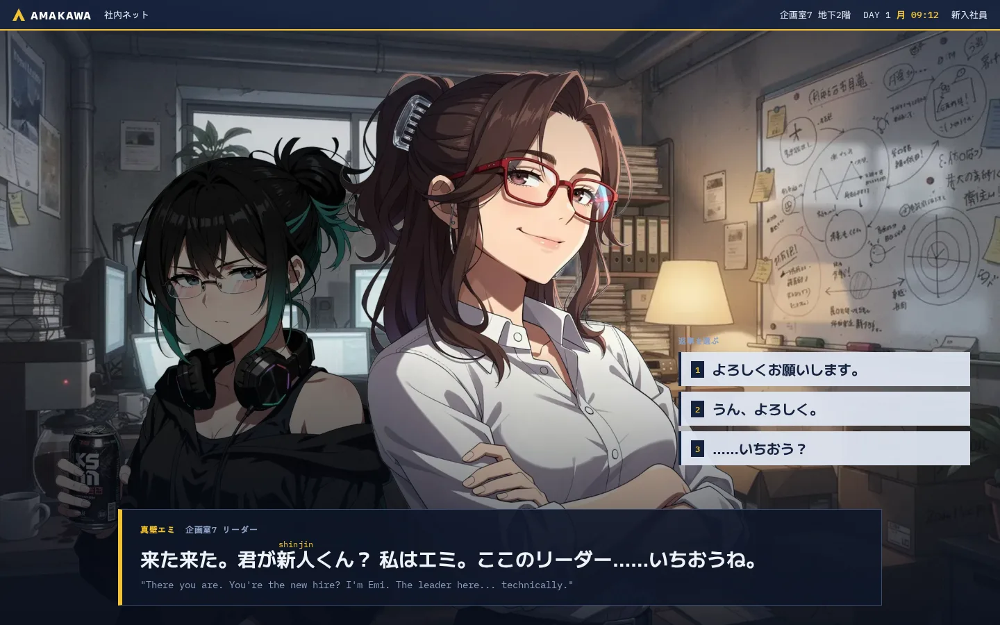
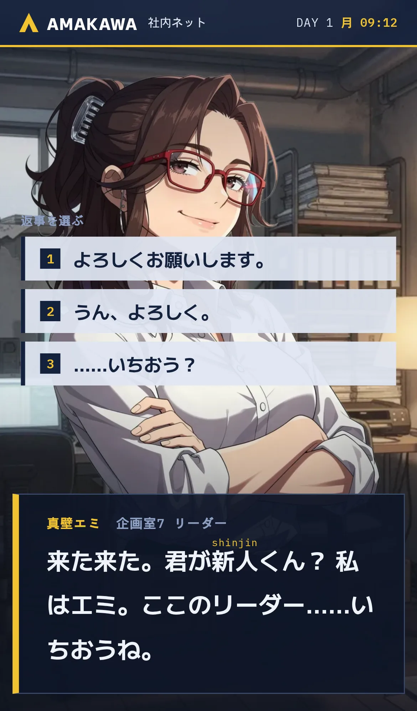
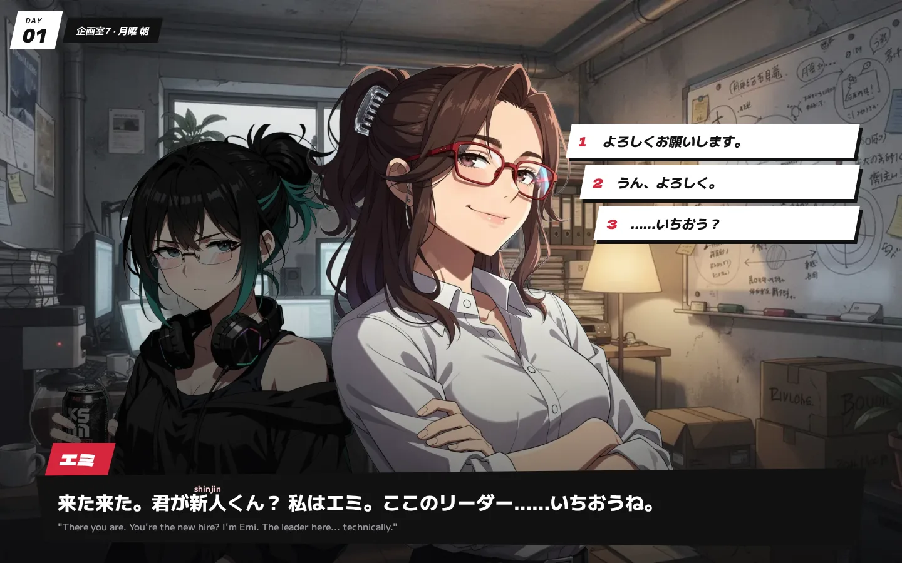
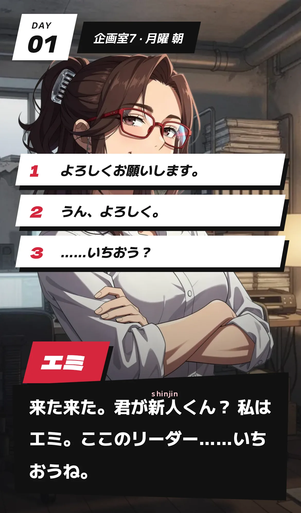
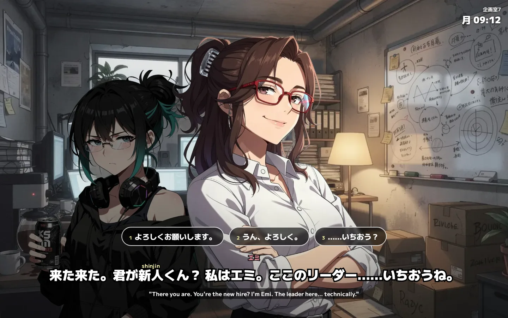
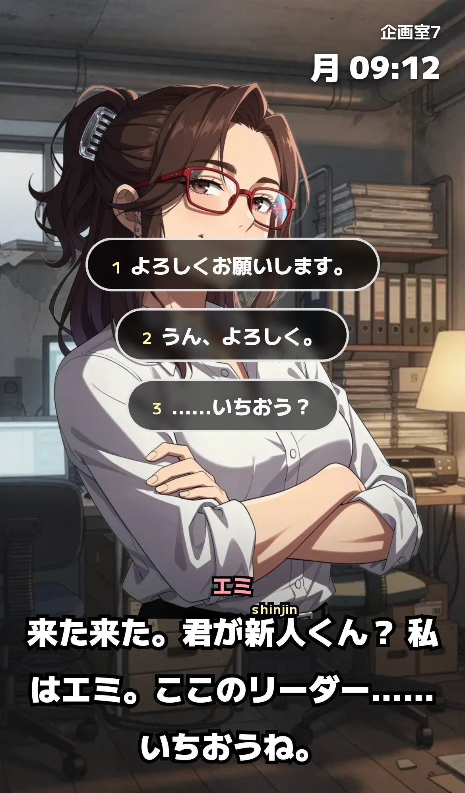

Three UI directions
The same moment in each: your first morning in Planning Office 7, Emi greeting you while Mio ignores you. The word 新人 is shown with its romaji reading above it (a word you are learning); the rest is either known or kana. Each one is a live page, so open it on your phone too.
A. Company terminal
The UI is the conglomerate's own employee software: Amakawa branding, system bar with location, day and rank, replies listed like suggested responses. When you use magic, this interface would glitch. Open live


B. Stylish JRPG
Angular, high-contrast panels and bold type, with the speaker's name as a slanted tag in their colour. Closer to Persona or Metaphor. Open live


C. Anime subtitles
Almost no interface: dialogue appears like fansub subtitles over the scene, replies as floating pills. Closest to watching an episode with Japanese subtitles, which is the skill you are training for. Open live

